|
C�MO HICE UNA ESCULTURA
DE Dipsochelys dussumieri
Alfredo Fillol, 2007
Una escultura se puede hacer con
infinidad de t�cnicas, tantas como imaginaci�n tenga el que la haga.
Normalmente se modela, talla o esculpe, salvo que uno sea moderno
y vanguardista y empiece a hacer chorradas y a retorcer cosas,
pegarlas; todo vale, salga lo que salga. En mi caso, casi siempre
modelo. Modelar, no confundir con moldear, es mover, quitar y poner
masas de un material d�ctil, como puede ser la arcilla, cera o plastilina. Es m�s f�cil modelar que esculpir, enfrentarse a un
volumen s�lido de piedra, m�rmol o madera y quitar lo que sobre hasta
que salga de dentro la figura pensada, no es una tonter�a. Hoy en d�a
casi nadie esculpe como los chavales del renacimiento; hacer una pieza
grandecita de m�rmol tiene un costo en tiempo verdaderamente
impensable hoy en d�a y habr�a que comercializarla a precio de percebe
o de angula.
Cuando me decido a hacer una figura
nueva, como en el caso de la Aldabra a tama�o natural, lo primero que
hago es informarme todo lo que puedo de como es lo que voy a modelar;
tengo que saber tanto o m�s de la morfolog�a y movimiento del tema que
el cliente m�s exigente, si no fuera as�, �qu� clase de escultor
realista ser�a?.
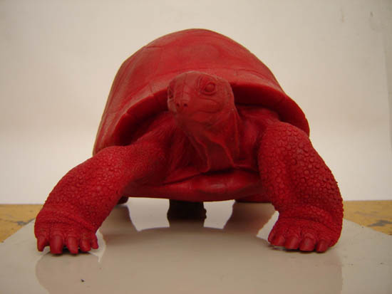
Foto 1
Una vez que mi cerebro cree que sabe y
memoriza las formas y detalles, hago un boceto a escala reducida. (Foto 1).
Intento que el boceto me convezca, y si no me convence, antes
de enga�arme, pido consejo y lo retoco. Hasta que quede como debe, lo
proyecto con un haz de luz potente y encajo la sombra en las
acotaciones que previamente hago en un gran pliego de cartulina;
proyecto la sombra de frente, perfiles y trasero; se�alo con un l�piz
el contorno de la sombra y ya tengo hecho los dibujos a tama�o que
quiero de la escultura. (Foto 2)
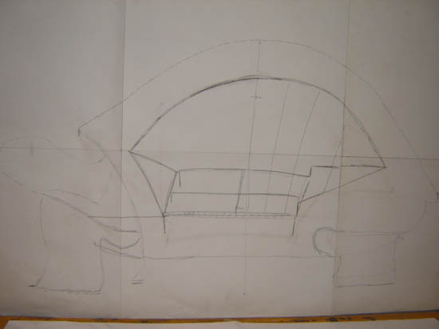
Foto 2
Las siluetas me dan pie para dise�ar lo
que ser� el armaz�n, a m� me gusta hacerlo de gavillas de hierro, que
sustente la arcilla. El "esqueleto" es fundamental para poder
modelas en barro, la arcilla no se autosustenta.(Foto 3).
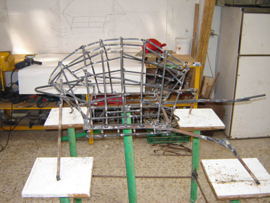
Foto 3
Una vez que est� el esqueleto hecho, lo
recubro de tela met�lica para que el barro "pegue bocaos" y no se
caiga. Empiezo a poner barro como loco; en dos o tres d�as tiene que
estar todo recubierto y con los vol�menes casi en su sitio y en una
semana m�s o menos tiene que estar afinada y terminada (fotos 4 y
5); si se tarda mucho en trabajar la arcilla, y aunque se tape
con pl�sticos, se corre el riesgo de que se seque, se cuartee, se
contraiga y se desprendan trozos.
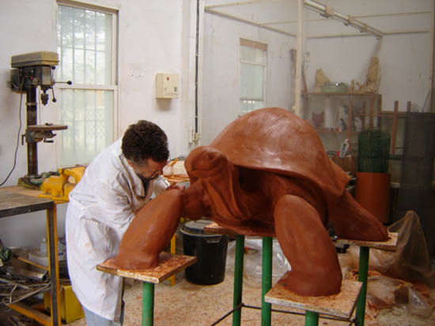
Foto 4
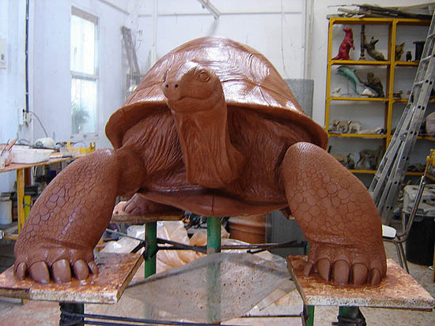
Foto 5
Ya est� el original terminado, qu�
bonito, que bien te ha quedado y esas cosas, pero la arcilla se seca y
hay que sacar el molde. Los moldes son de dos tipos, molde perdido,
normalmente en escayola y sirve para una reproducci�n (Fotos 6 y 7) y molde m�ltiple, que se hace en siliconas y otro tipo de gomas
(Foto 8) y sirven para sacar varias reproducciones. La
ventaja del molde perdido, s�lo es el costo, la escayola est� barata.
Una vez que gracias al molde de escayola tengo una primera copia en un
material resistente, estudio si le hago un molde de goma, para sacar
m�s reproducciones.
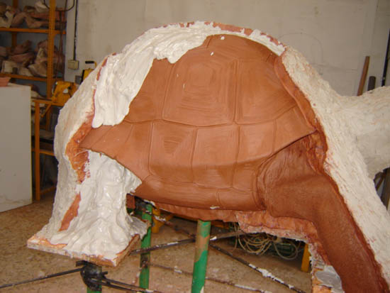
Foto 6
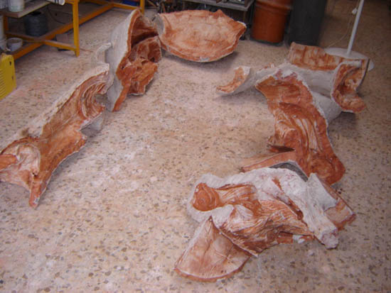
Foto 7
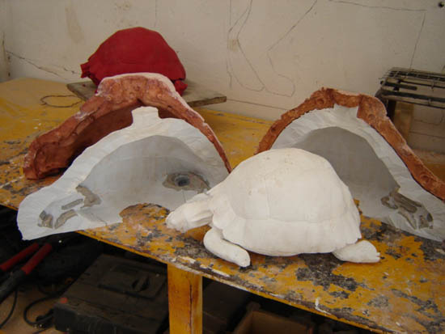
Foto 8
Las reproducciones o copias se hacen en
bronce o en materiales m�s modernillos como resinas de poli�ster o
resinas �poxi. Todo tiene su lado bueno y malo. El bronce, es el
material por excelencia, precioso y eterno, pero car�simo, m�s caro
todav�a. Los presupuestos de dos fundiciones distintas que tengo de
la escultura de la Aldabra, rondan los nueve mil eurillos, mill�n y
medio de pesetas que le tengo que soltar al fundidor para que me haga
una copia en bronce, esto unido a mi trabajo y dem�s gastos pone la
escultura en bronce a unos precios desorbitados; estamos hablando de
una escultura grande, los bronces de sobremesa, de un tama�ito mediano
son caros pero no imposibles. Como alternativa al bronce est� las
resinas sint�ticas; la de poli�ster es buena pero tiene dos problemas,
se contrae cuando endurece y a�n siendo dur�sima al rayado, es
relativamente fr�gil al impacto; la resina �poxi no contrae el
endurecer, perfecto, y es dura al rayado y muy resistente al impacto,
es bastante m�s cara que la de poli�ster pero merece la pena
sobradamente.
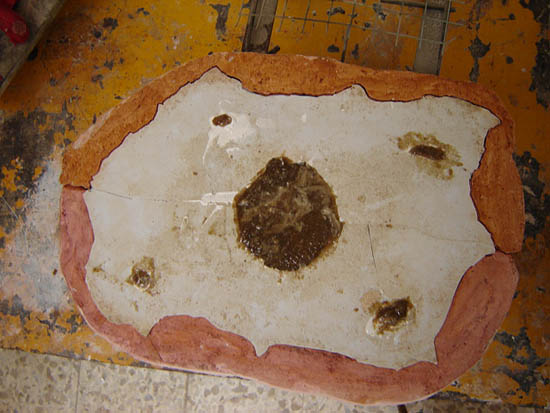
Foto 9
Si la escultura es mediana no me
complico la vida y la hago maciza (Foto 9), pero si es grande, la
hago hueca, como en el caso de la Aldabra, que consegu� que con un
peso de 47 kilogramos pueda la escultura con un peso encima de una
persona. La hice hueca, aproximadamente de dos cms y medio de espesor,
con fibra de vidrio. Us� una resina epoxi de primera calidad, en
pasta, para que la capa primera, que es la que se ve y toma el detalle
del molde no se descolgara (Fotos 10 y 11) y otra resina l�quida
para hacer el estratificado, con fibra de vidrio; con dos o tres capas
de resina y fibra, se le da una resistencia extraordinaria (Fotos 12
y 13).
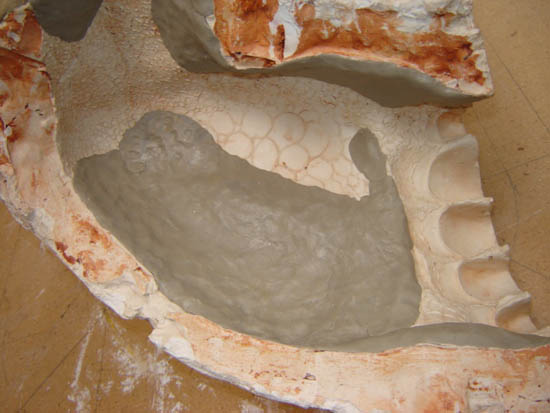
Foto 10
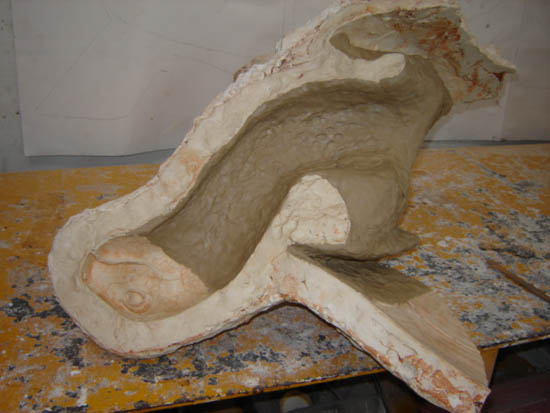
Foto 11
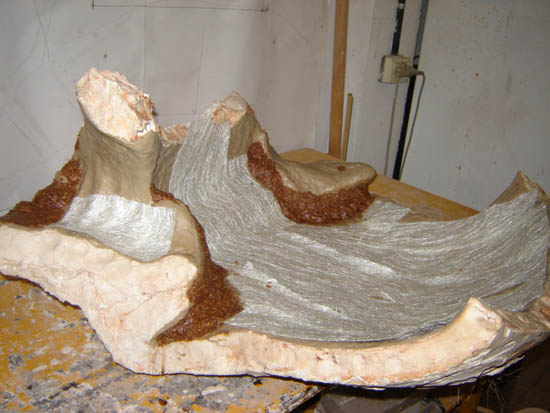
Foto 12
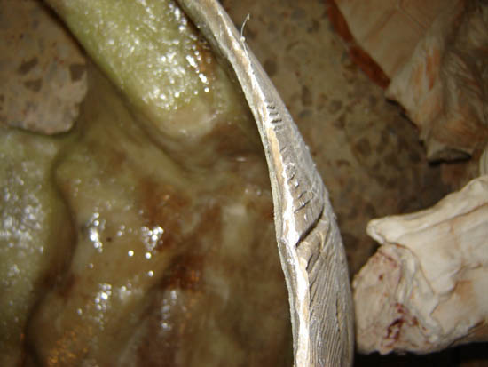
Foto 13
Cuando el proceso de las resinas est�
terminado, se destruye el molde de escayola, y tenemos la escultura
entera o por piezas (Fotos 14 y 15), seg�n como se halla pensado
hacer; en el caso de la Aldabra la hice en cinco piezas, porque los
moldes pesaban una barbaridad y no era f�cil su encaje para hacer la
reproducci�n entera, prefer� encajar las piezas seg�n las descubr�a
de la escayola (Fotos 16 y 17).
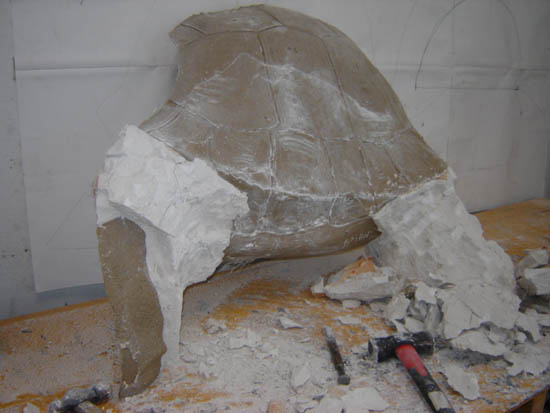
Foto 14
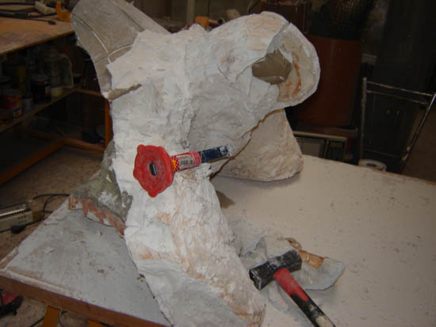
Foto 15
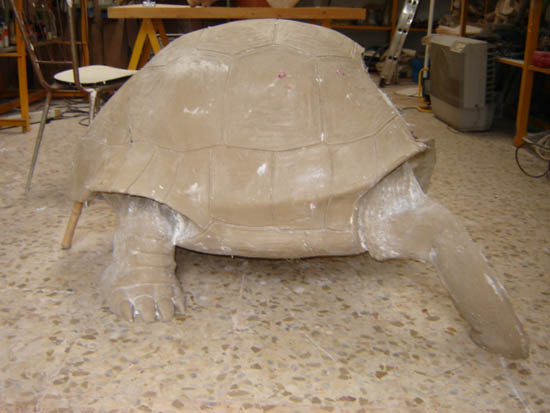
Foto 16
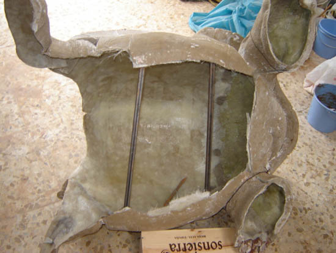
Foto 17
S�lo queda repasar las rebabas e
imperfecciones y terminar con una p�tina s�mil bronce (Fotos 18 y 19).
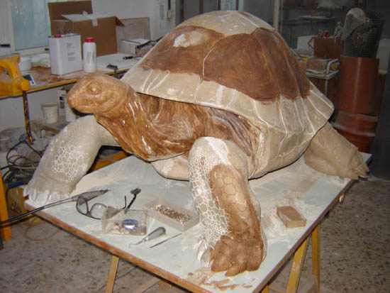
Foto 18
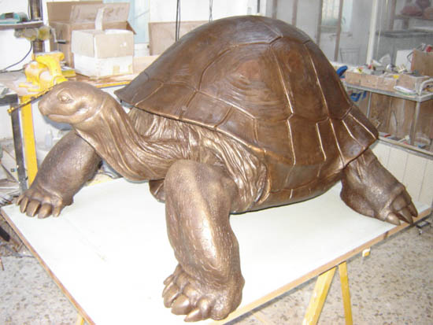
Foto 19
Escultura terminada y colocada. (Fotos
20 y 21)
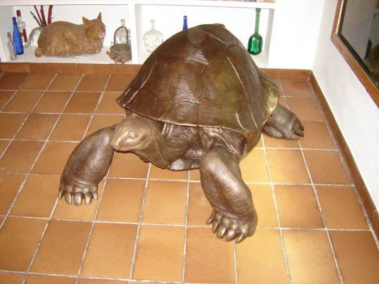
Foto 20
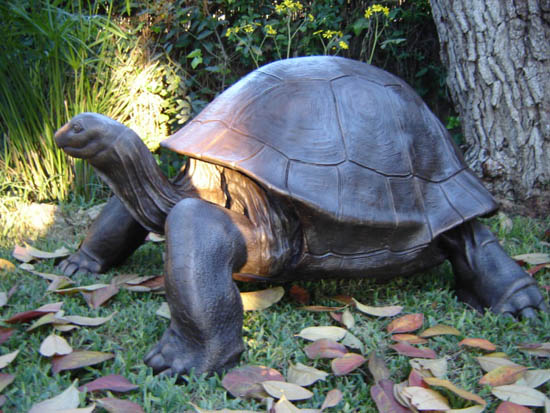
Foto 21
Qu� suerte tienen los pintores, una
tela, cuatro listones de madera y mil pelas de pintura y ya est� hecho
el cuadro.
Espero os entretenga esta disertaci�n
t�cnica.
|